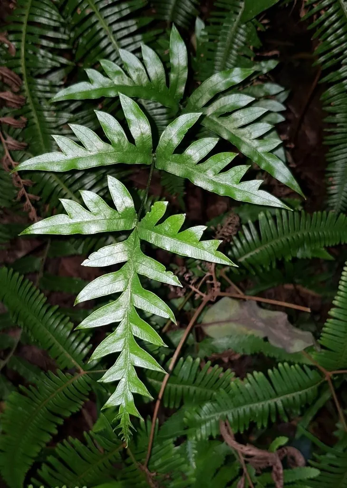

蕨类与裸子植物 · 植物界
半边旗 Pteris semipinnata

半边旗的羽片只生于叶轴的一侧，像半面旗帜，是南方常见的蕨类植物，全草可入药，有清热解毒之效。
- 分类
- 门蕨类植物门纲水龙骨纲目水龙骨目科凤尾蕨科属凤尾蕨属
- 栖息环境
- 南方山地林下、溪边、石缝与墙脚，喜温暖湿润半阴
- 地理分布
- 中国华南、西南及华东南部，东南亚也有分布
- 保护级别
- 暂无评估；野生种群常见
物种志
半边旗是凤尾蕨科多年生蕨类，株高 0.3–0.8 m。根状茎横走，密生鳞片。叶簇生，叶柄栗褐色；叶片为二回羽状复叶，最特别的是羽片只着生于叶轴的一侧，另一侧空缺，形成“半边”的奇特形态，因此得名。末回小羽片披针形，能育叶边缘反卷，形成线形孢子囊群。
半边旗喜温暖湿润、半阴环境，多生于南方山地林下、溪边、石缝与墙脚，耐阴、耐湿。它以孢子繁殖，根状茎可蔓延，常成片生长。半边旗形态奇特、叶姿轻盈，可作阴湿处的观赏植物；全草在民间作药用，称“半边旗”，有清热解毒、止血散瘀之效，用于痢疾、外伤出血等症。它在华南、西南地区分布广泛，是南方常见的野生蕨类之一。
形态与习性
- 株高0.3–0.8 m
- 叶羽片仅生于叶轴一侧
- 孢子囊群线形，生于能育叶边缘
- 药用全草清热解毒、止血散瘀
- 生境林下、溪边与石缝
趣味知识
- 半边旗的羽片只长在叶轴的一侧，看起来像半面旗，名字由此而来。
- 它常生长在溪边石缝和墙脚，耐阴耐湿。
- 民间用半边旗全草清热解毒、止血散瘀。